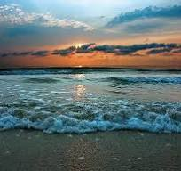

Чёрное море
Чёрное мо́ре — внутреннее море бассейна Атлантического океана.
Проливом Босфор соединяется с Мраморным морем, далее, через пролив Дарданеллы
(эти проливы зачастую называют Черноморскими проливами) —
с Эгейским и Средиземным морями. Керченским проливом соединяется с Азовским морем.
С севера в море глубоко врезается Крымский полуостров.
Расположение
Координаты
Море омывает берега стран:
- Болгария
- Россия
- Украина
- Румыния
- Турция
- Грузия
- Абхазия
Чёрное море - Херсонщина

Основные характеристики
| Характеристики |
| Площадь |
422 000 кв.км |
| Обьем |
555 000 кв.км |
| Длина береговой линии |
3400 км |
| Наибольшая глубина |
2210 м |
| Средняя глубина |
1240 м |
Интересные факты о Чёрном море
- Черное море – одно из самых молодых морей Земли. 8 тысяч лет назад оно было озером.
- Катран - это единственная акула в Черном море.
- 8-10 м в высоту возможны цунами в Черном море.
- Черное море постепенно расширяется. Вода наступает на берег со скоростью 2-3 мм в год.
- На 12 см повысился уровень воды в море за последние сто лет.
- Черноморских устриц уничтожили рапаны, потому что в Черном море не водятся враги рапанов – морские звезды.
Рапаны были случайно завезены с Дальнего Востока.
- Вода в Черном море в два раза преснее, чем в мировом океане.
- 8-9ºС –постоянная температура моря на больших глубинах.
- На дне Черного моря есть залежи нефти и газа, но их добыча нерентабельна.
- 50-200 м – глубина залегания сероводорода. Черное море – единственное сероводородное море в мире.
- 2 210 м – максимальная глубина Черного моря.
- Самых крупных дельфинов Черного моря – афалин в советское время готовили для подводных диверсий.
Переход на главную страницу >>